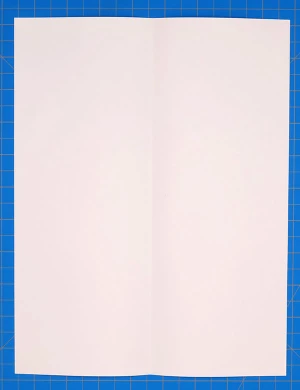
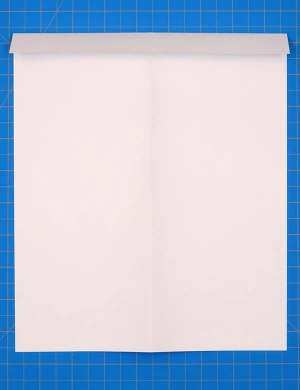
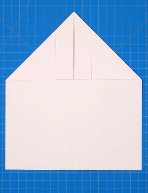
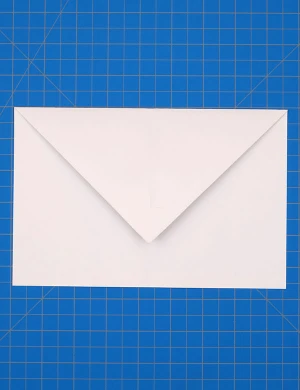
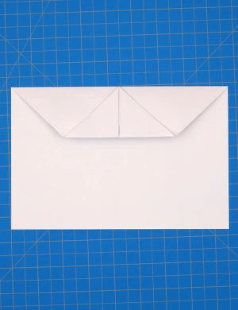
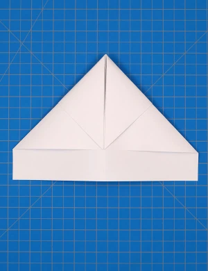

1Step 1
Fold the paper in half lengthwise and then unfold.

Fold the paper in half lengthwise and then unfold.

Flip the paper over and fold the top edge down about 1 inch (2.5cm).

Flip the paper back around and fold the top two corners to the middle crease.

Fold the top triangle piece down, so the diagonal edges line up with the top corners of the paper.

Fold the triangle piece back up so that the point touches the top of the paper.

Flip the paper over to the back side and fold the top two corners to the middle crease.
With a calm day and a level throw, expect only a short distance, since this design is not built for range. Wind, paper weight, and small crease errors all change the result.
在无风天气、水平投掷的情况下，大约能飞 距离很短，这款机型本身并不以远距为目标。风力、纸张克重和折痕误差都会改变实际结果。
A well-trimmed Arrowhead should hold a very brief flight; the design is not aimed at hang time. Launching from a higher spot and keeping the wings level will extend it.
调整得当的 Arrowhead 可以保持滞空时间很短，这类机型并不追求滞空。从更高的位置轻投、保持两翼水平，都能延长滞空时间。
It is a distance dart rated Easy difficulty. Fold it from Letter & A4 in 6 steps with no scissors required.
它是一款远距机型，难度为简单，用Letter & A4折 6 步，全程不用剪刀。
Hold the plane level and throw with a smooth, firm push, aiming straight ahead rather than upward.
让机身保持水平，用平稳有力的推送直线投出，不要向上抛。